Create a New Project
Follow these steps to create, publish, and set up a new repository using GitHub Desktop and GitHub.
Prepare Your Local Project Folder
Start with a local project folder on your computer. Keep project data, results, and other files that should not be shared through GitHub outside the repository. The repository will be a separate subfolder within your local project folder.
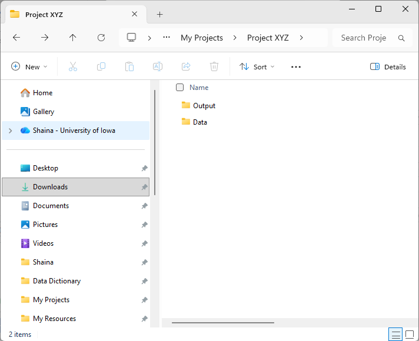
Prepare a parent project folder for your repositoryCreate a Local Repository
In GitHub Desktop, select File → New Repository. Enter a repository name, such as Project-XYZ, and select your parent project folder as the Local Path. Select Initialize this repository with a README, leave Git Ignore as None, and click Create Repository.
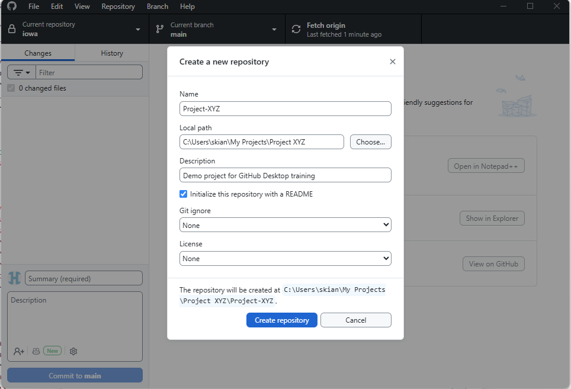
Create a local repositoryPublish the Repository
Click Publish Repository in GitHub Desktop. Select UI-CTSDMC as the owner, choose the approved visibility settings, and publish the repository.
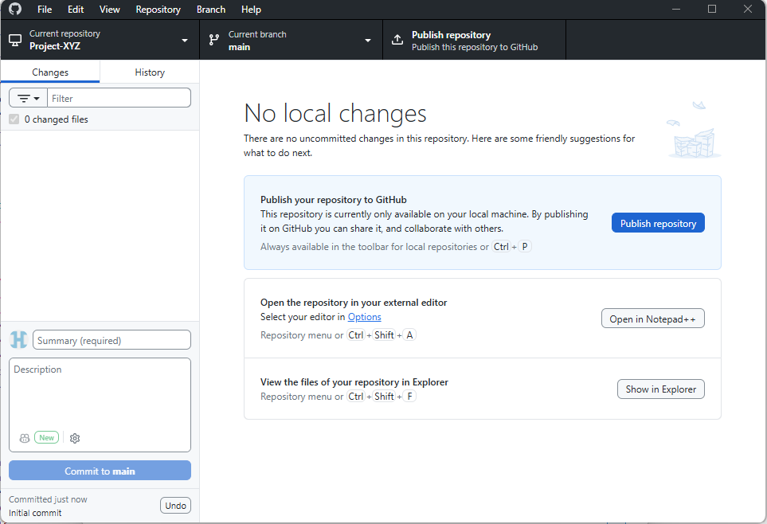
Publish the repository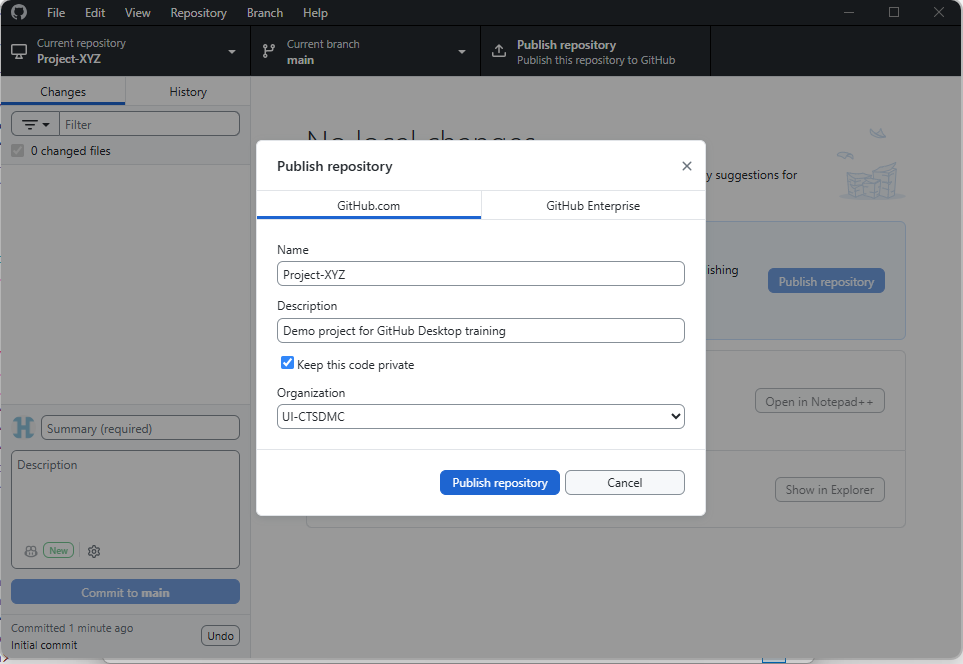
Select UI-CTSDMC as the owner organizationDecide Whether Approval Is Required
Before starting project work, confirm whether changes must be reviewed and approved before they are merged into the main branch. If approval is required, configure branch protection on GitHub before creating working branches.
Create a Branch Ruleset
Open your repository on the GitHub website. Navigate to Settings → Rules → Rulesets and select New branch ruleset. Enter a descriptive name, such as Main Branch Protection. Set the enforcement status to Active and select Include default branch to apply the ruleset to main.
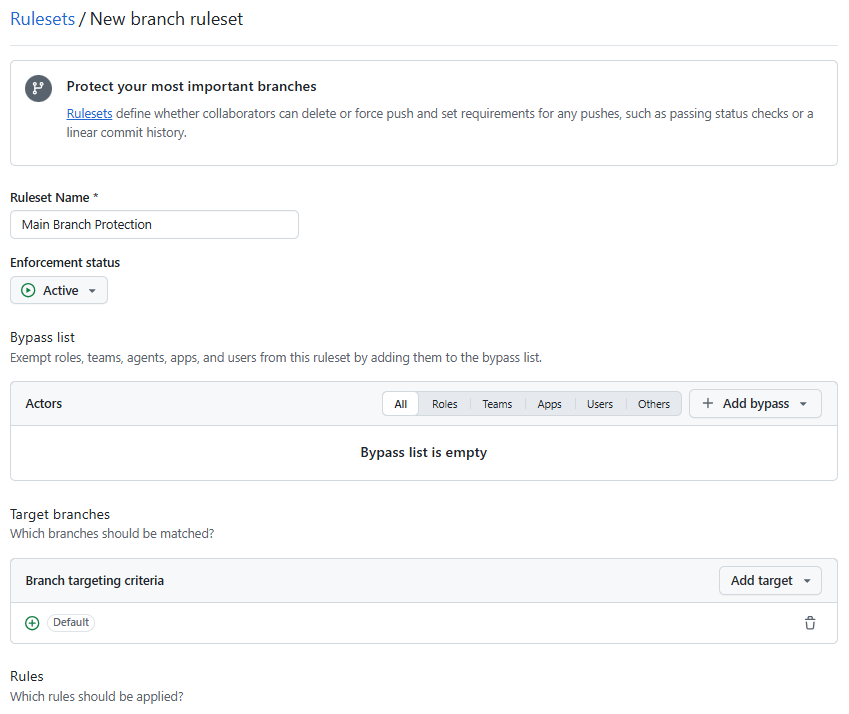
Create branch rulsetConfigure Review Requirements
Under Branch rules, enable Require a pull request before merging. Set Required approvals to the number specified for your project. This determines how many eligible reviewers must approve a pull request before changes can be merged into main.
Enable Dismiss stale pull request approvals when new commits are pushed if previously granted approvals should be dismissed when new commits are added to the pull request.
If approval from any eligible reviewer is sufficient, leave Require review from Code Owners unchecked. If your project requires approval from designated code owners, additional configuration is necessary.
You may also enable Restrict deletions and Block force pushes to help protect the main branch. Leave Restrict updates unchecked for this training workflow.
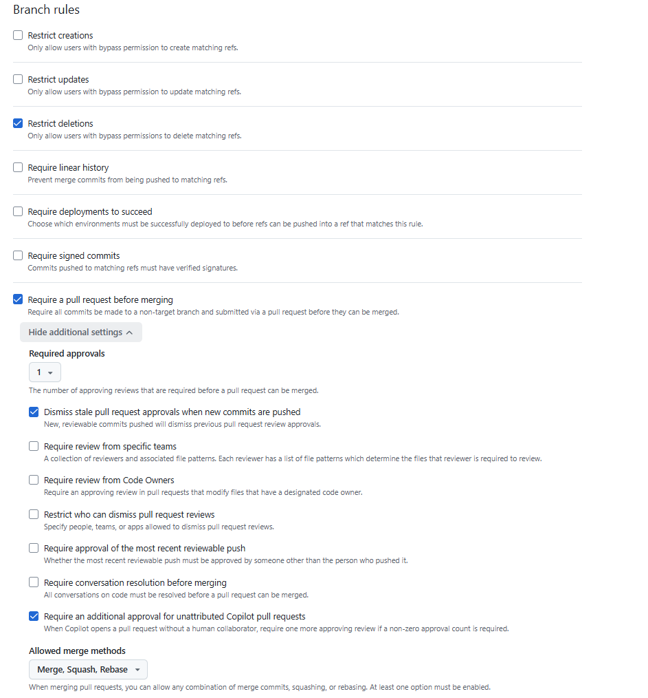
Set up branch rulesReview the configuration and save the ruleset using Create or Save changes, as appropriate.
Create and Publish a Working Branch
In GitHub Desktop, select Current Branch → New Branch. Create your branch from main using the agreed name for your role, such as Lead or Validator. Click Create Branch, and publish your branch.
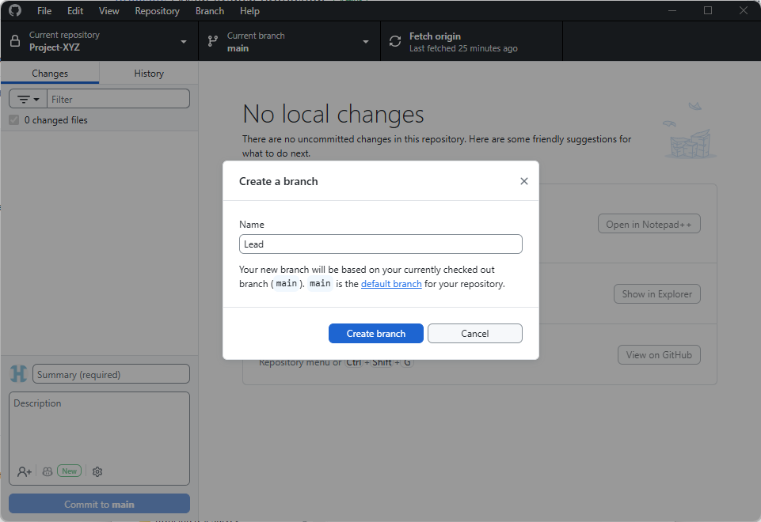
Create a working branch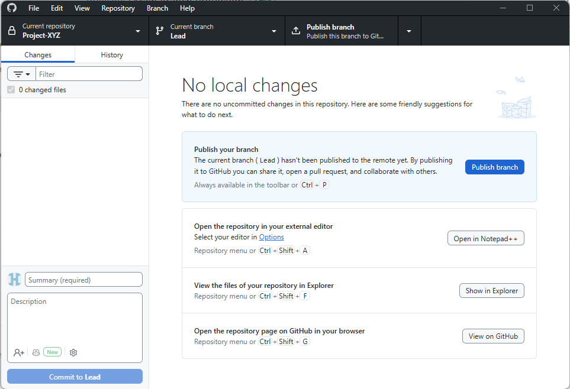
Publish your working branchOrganize Your Local Files
Open your local repository folder (Repository → Show in Explorer) and create the files and subfolders needed for your work. Only files that should be version-controlled and shared through GitHub belong inside this folder.
Lead and Validator work independently. Each person organizes the files needed for their own role. You do not need to create your colleague's working folders.
In this example, the Lead wants to share R and SAS code files through GitHub. Therefore, two folders, R Codes and SAS Codes, are created to organize the corresponding files.
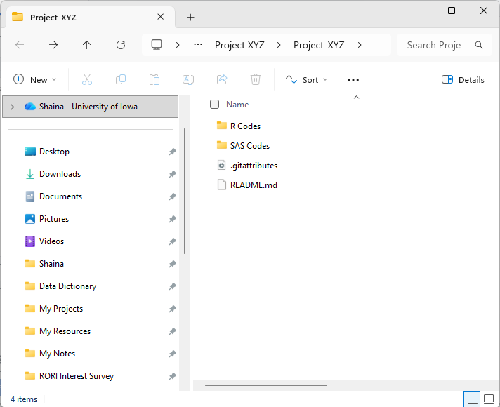
Create a local project folder for GitHub materialsCommit and Push
Save your changes and open the Changes tab in GitHub Desktop. Review the files, enter a descriptive commit summary, and select Commit to your branch.
Click Publish Branch for the first push, or Push Origin for later changes. Repeat this process as you work on the project.
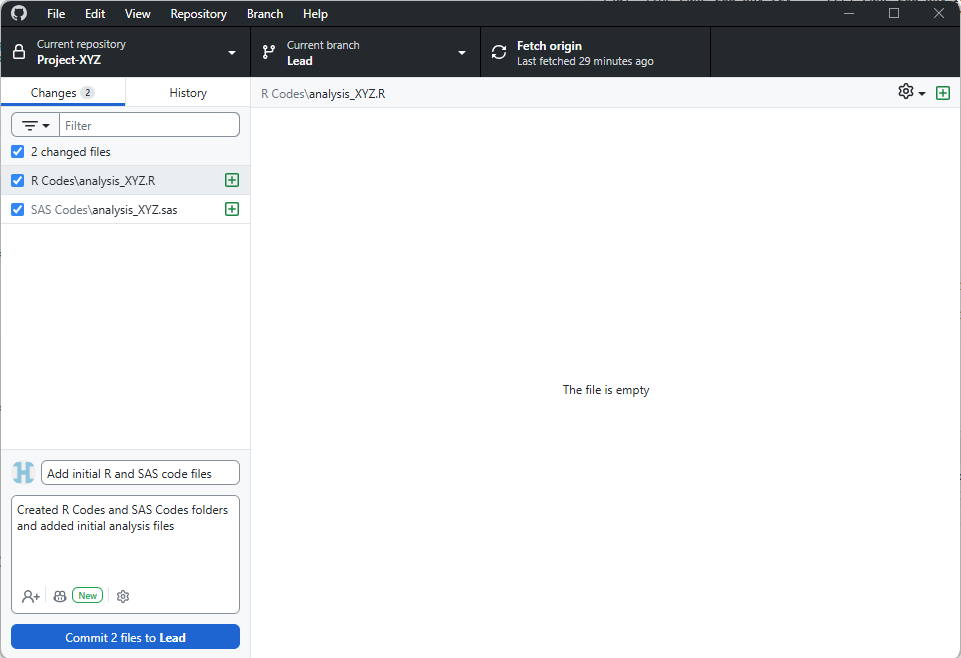
Commit your changes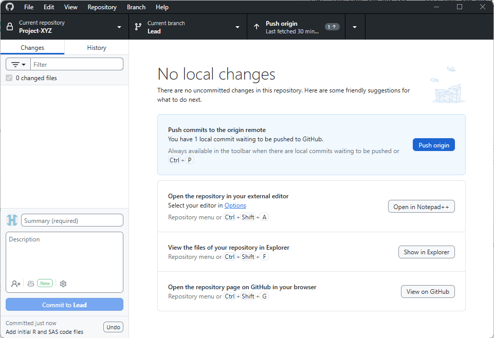
Push changes to GitHubReview Commit History
Select your branch and open the History tab in GitHub Desktop. Click a commit to see which files were changed and review the recorded changes.
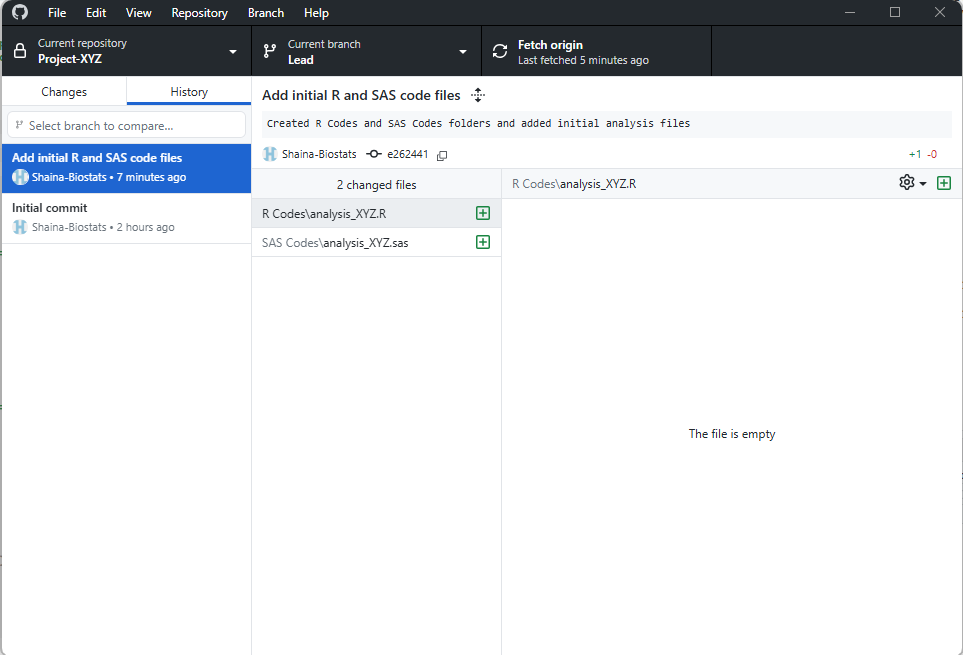
Review the recorded changes